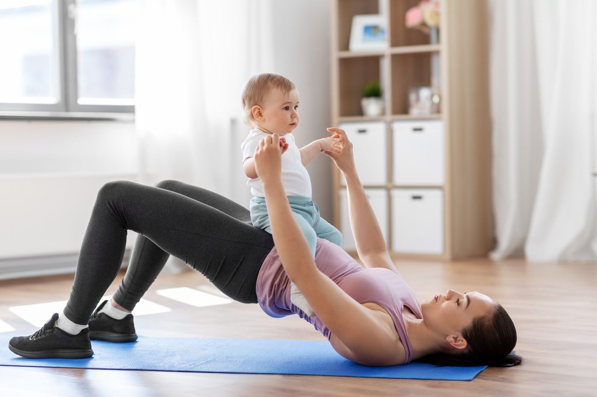

Formas de Vivir Humankind
Humankind no es un único programa. Es una filosofía que se expresa a través de distintas experiencias. Cada una está diseñada para ayudar a las personas a comprenderse más profundamente y participar más plenamente en la vida.
Coaching Individual y Grupal
Para personas que buscan un apoyo reflexivo y personalizado en torno a la salud, el movimiento, los hábitos, la recuperación de lesiones, el autoconocimiento y el cambio sostenible, de forma individual o en grupo. El trabajo comienza comprendiendo a la persona, no imponiendo un plan.
El coaching puede incluir:
- Evaluación y práctica del movimiento.
- Entrenamiento de fuerza y movilidad.
- Conciencia del sueño, la alimentación y la recuperación.
- Diseño de hábitos.
- Reflexión y responsabilidad.
- Apoyo ante lesiones, transiciones o inconsistencia.
«El apoyo más valioso que recibí de él fue durante la preparación previa a mi cirugía de reemplazo de cadera y en la recuperación posquirúrgica. Recomiendo encarecidamente contactarlo por su orientación.»
— Md. Ashiqul Islam«Su enfoque personalizado me ayudó a alcanzar mis objetivos de salud de forma sostenible. Es un profesional con conocimiento, que apoya de verdad y se preocupa por tu bienestar.»
— Vinay Vyas«El enfoque de Ajith, que no se limita a la salud física sino que también abarca la salud mental y las prácticas conductuales holísticas, lo distingue. Su coaching realmente ha cambiado mi vida.»
— Ateeshay JainApoyo Posparto y Retorno al Movimiento
Para quienes retoman el movimiento tras el embarazo, el parto, una lesión o un cambio importante en el cuerpo. Este trabajo respeta el cuerpo tal como es ahora, reconstruyendo la fuerza, reconectando con el core y la respiración, comprendiendo la recuperación y avanzando sin la presión de «recuperar la forma».

Lo que normalmente se dice
Tras el parto, muchas mujeres escuchan «dale tiempo», «esto es normal» o «tu cuerpo se recuperará solo», mientras siguen lidiando con diástasis abdominal, dolor de espalda, debilidad pélvica, mala postura, poca energía o miedo a volver a hacer ejercicio. Eso merece una rehabilitación adecuada, no conjeturas.
En qué consiste este programa
Rehabilitación de la diástasis abdominal, restauración del core, trabajo de estabilidad pélvica, mecánica respiratoria, corrección postural, reconstrucción de la fuerza y un retorno gradual al ejercicio, construido en torno a tu propio calendario de recuperación, no uno genérico.
Una clienta llegó con una separación de diástasis abdominal de cinco dedos. Tras tres meses de trabajo respiratorio, activación profunda del core, movilidad progresiva, reconstrucción de fuerza y cambios en el estilo de vida, esa separación se redujo a dos dedos.1
Esto no es: solo ejercicios abdominales o de Kegel, entrenamientos posparto de alta intensidad, ni presión por perder peso.
La recuperación no consiste en reducir tu cuerpo. Consiste en reconstruir capacidad.
- Esta es la experiencia individual de una clienta, no un resultado garantizado, los tiempos de recuperación de la diástasis abdominal varían según la persona, por lo que el programa se construye en torno al propio calendario de recuperación de cada clienta y no a un cronograma fijo. ↩
Coaching de Movimiento para Personas Neurodivergentes
Para personas neurodivergentes de todas las edades que se benefician de un apoyo basado en el movimiento, guiado por fortalezas y con conciencia sensorial. Las sesiones se adaptan a la persona que tenemos delante. Eso incluye juego, movimiento, construcción de confianza, conciencia corporal, seguridad, coordinación, regulación y participación. El objetivo no es la obediencia. El objetivo es la comprensión, la implicación y el progreso con sentido.
«Ajith ha sido un gran entrenador de running para nuestro hijo especial... algunas capacidades son un don — saber cómo conectar con un niño especial, cómo motivarlo, cómo exigirle manteniendo límites, y saber cuándo no exigirle. Ajith simplemente lo tiene.»
— Vishal Singh, padre«Ajith ha estado trabajando con mi hijo durante los últimos 8 meses y sus sesiones han sido muy efectivas — personalizadas y muy atractivas. Estas sesiones también han ayudado a mejorar su atención y su conciencia.»
— Priya M S, madre«Ha estado entrenando a mis hijos gemelos autistas de 10 años... Es paciente, tranquilo y comprensivo, algo especialmente importante al trabajar con niños autistas. He visto mejoras en su nivel de actividad, su coordinación y su disciplina.»
— Rohini Anthoniappa Balu, madreTalleres
Experiencias compartidas para grupos, comunidades, colegios y organizaciones.
Los temas de los talleres pueden incluir:
- La comprensión antes que el cambio.
- El movimiento como conciencia.
- Sueño y recuperación.
- Neurodiversidad y participación.
- Una salud que sostiene la vida.
- Construcción de hábitos sostenibles.
Bienestar Corporativo y Comunitario
Para organizaciones que quieren apoyar a las personas más allá de los consejos genéricos de bienestar. Los talleres y programas de Humankind pueden ayudar a los equipos a reflexionar sobre el estrés, la energía, el movimiento, la comunicación y formas sostenibles de trabajar. El enfoque es práctico, humano y basado en el autoconocimiento.
Humankind también diseña programas de bienestar personalizados para equipos corporativos, comunidades deportivas, comunidades residenciales, grupos juveniles y espacios educativos, y comunidades de bienestar, incluyendo la recuperación posparto ofrecida a través de programas de bienestar de RRHH y redes de fundadores.
La experiencia adecuada empieza con la comprensión.
Si no estás seguro de cuál es el camino adecuado, empieza con una conversación.